Constraint Satisfaction Problems
Standard search problems:
- State is a “black box”: arbitrary data structure
- Goal test can be any function over states
- Successor function can also be anything
Constraint satisfaction problems (CSPs):
- A special subset of search problems
- Variables: a set of $N$ variables $X_1,\dots,X_N$ that can each take on a single value from some defined set of values.
- Domain: A set $\{x_1,\dots,x_d\}$ representing all possible values that a CSP variable can take on.
- Constraints: Constraints define restrictions on the values of variables, potentially with regard to other variables.
Example
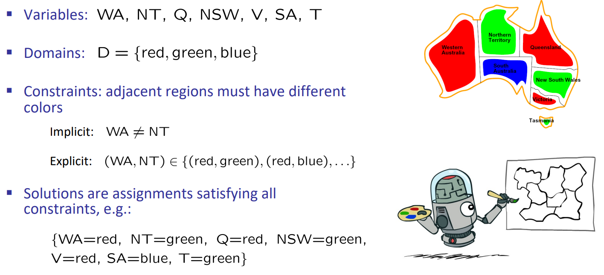
Constraint Graphs
Represent constrains on a specify graph. Adjacent nodes have different color can be represent by edge between nodes.
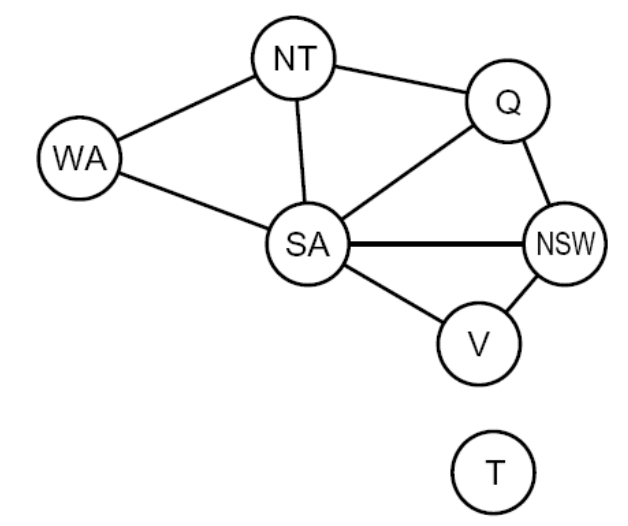
Varieties of CSPs
- Discrete Variables
- Finite domains
- E.g., Boolean CSPs, including Boolean satisfiability (NP-complete)
- Infinite domains (integers, strings, etc.)
- E.g., job scheduling, variables are start/end times for each job
- Linear constraints solvable, nonlinear undecidable
- Finite domains
- Continuous variables
- E.g., start/end times for Hubble Telescope observations
- Linear constraints solvable in polynomial time by LP methods
- Varieties of Constraints
- Unary constraints
- Binary constraints
- Higher-order constraints involve 3 or more variables
- Preferences (soft constraints):
- E.g., red is better than green
Solving CSPs
Backtracking Search
Idea 1: One variable at a time
Idea 2: Check constraints as you go
Backtracking = DFS + variable-ordering + fail-on-violation
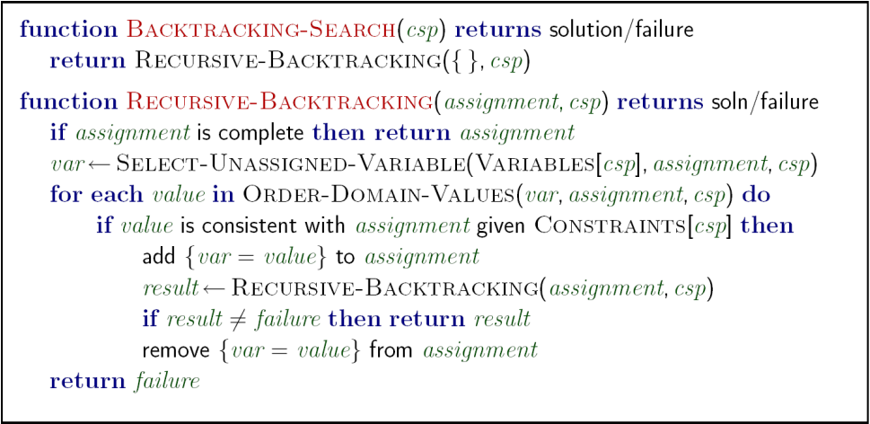
K-Consistency
Increasing degrees of consistency
- 1-Consistency (Node Consistency): Each single node’s domain has a value which meets that node’s unary constraints
- 2-Consistency (Arc Consistency): For each pair of nodes, any consistent assignment to one can be extended to the other
- K-Consistency: For each k nodes, any consistent assignment to k-1 can be extended to the k$^{th}$ node.
Consistency means if we get a solution for k-1 nodes, then we can extend it to k nodes.
Strong K-Consistency
Strong k-consistency: also $k-1, k-2, \dots, 1$ consistent
Claim: strong n-consistency means we can solve without backtracking!
Improving Backtracking
Ordering, Filtering, Structure.
Filtering: Forward Checking
Filtering: Keep track of domains for unassigned variables and cross off bad options
Forward checking: Cross off values that violate a constraint when added to the existing assignment
Ordering
Variable Ordering: Minimum remaining values (MRV):
- Choose the variable with the fewest legal left values in its domain
- Aiming at decreasing the time complexity(?)
Value Ordering: Least Constraining Value (LCV):
- Given a choice of variable, choose the least constraining value
- I.e., the one that rules out the fewest values in the remaining variables
- Aiming at increasing probability of valid solution(?)
Structure
Extreme case: independent subproblems.
Divide and conquer to decrease the time complexity.
Tree-Structured CSPs
Theorem: if the constraint graph has no loops, the CSP can be solved in $O(n\cdot d^2)$ time.
Algorithm:
- Order: Choose a root variable, order variables so that parents precede children
- Remove backward: For i = n : 2, apply RemoveInconsistent(Parent(Xi),Xi)
- Assign forward: For i = 1 : n, assign Xi consistently with Parent(Xi)
Proof of time complexity:
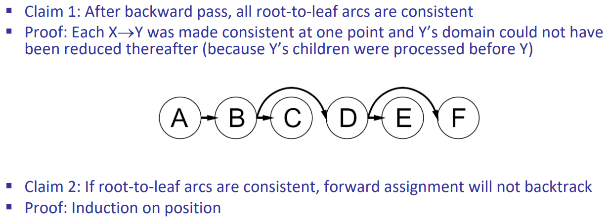
Nearly Tree-Structured CSPs
Conditioning: instantiate a variable, prune its neighbors’ domains
Cutset conditioning: instantiate (in all ways) a set of variables such that the remaining constraint graph is a tree
Cutset size c gives runtime $O(d^c(n-c)d^2)$, very fast for small c
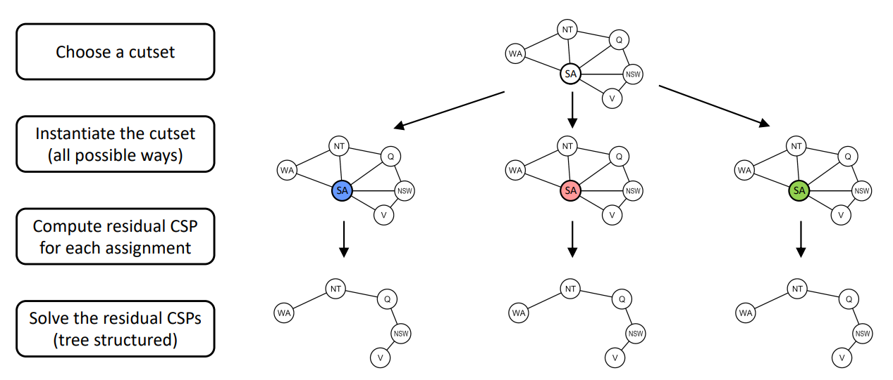
Tree Decomposition
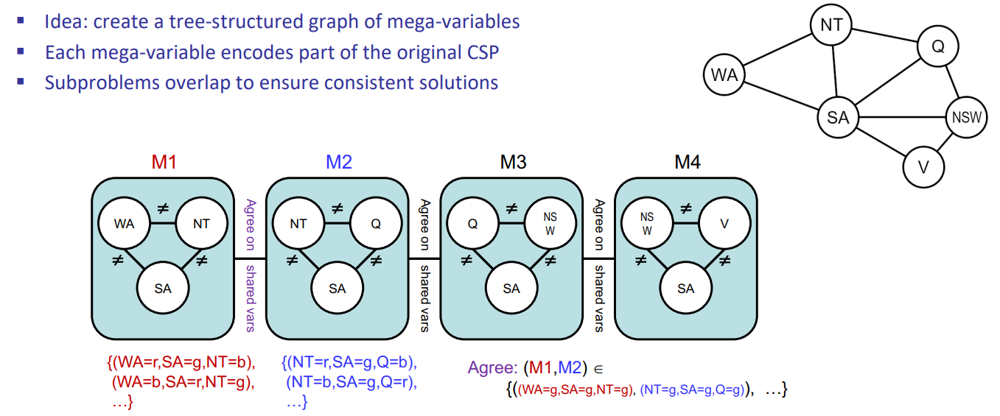
Local Search
Idea: iterative improvement - start with some random assignment to values then iteratively select a random conflicted variable and reassign its value to the one that violates the fewest constraints until no more constraint violations exist.
Known as min-conflicts heuristic policy.
Local search appears to run in almost constant time and have a high probability of success on N-queens and other randomly generated CSP except in a narrow range of the ratio(critical ratio).
Local search is fast and memory-saving but incomplete and suboptimal.
Example on N-queens Problem
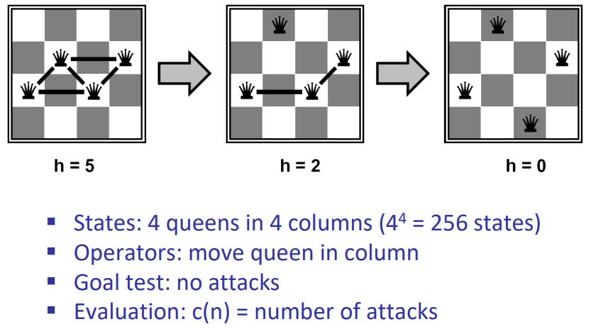
Critical Ratio
Around critical ratio using local search becomes extremely expensive.
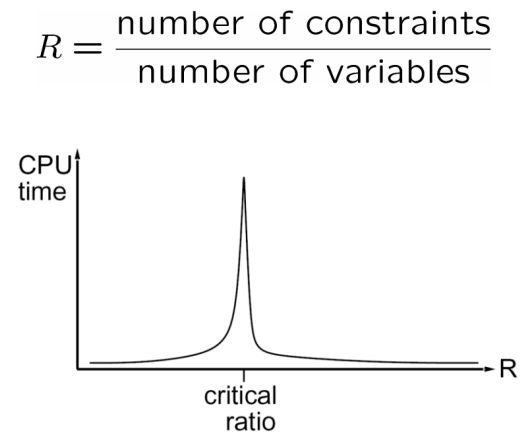
Hill Climbing(爬山)
The hill-climbing search algorithm (or steepest-ascent) moves from the current state towards a neighboring state that increases the objective value.
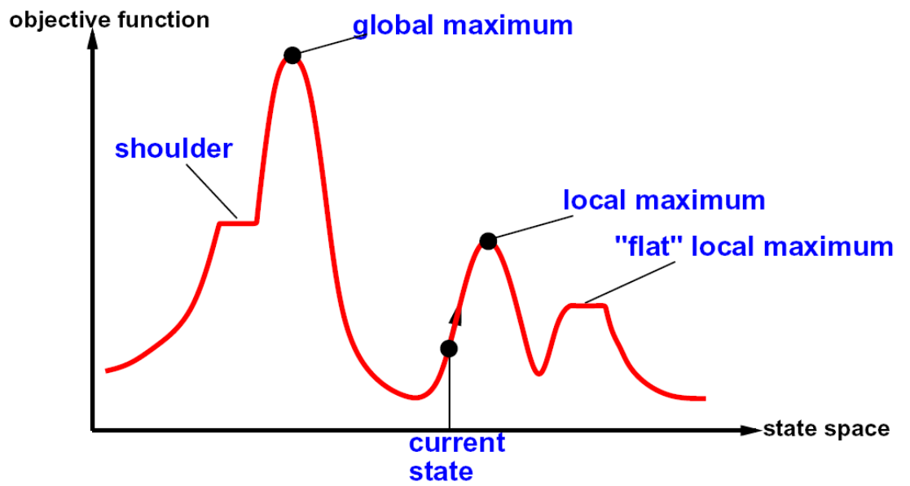
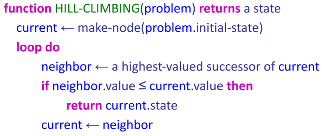
Hill-climbing is incomplete. Random-Restart hill-climbing on the other hand is trivially complete as at some point the randomly chosen initial state will coincide with the global maximum.
Simulated Annealing(模拟退火)
Idea: Escape local maxima by allowing downhill moves
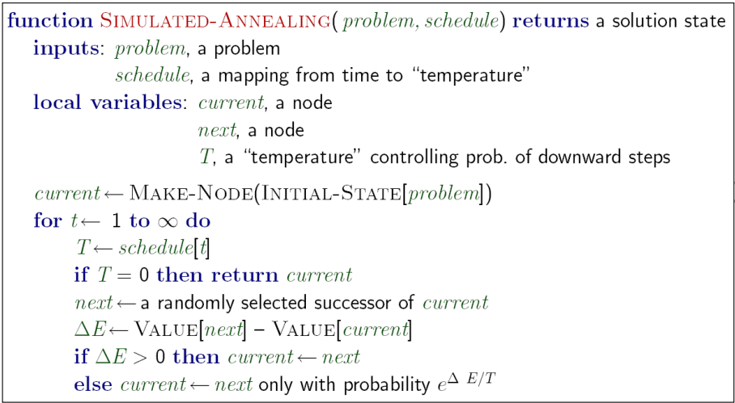
Theoretical guarantee: If T decreased slowly enough, will converge to optimal state!
Genetic Algorithms(遗传算法)
Genetic algorithms use a natural selection metaphor
- Keep best N hypotheses at each step (selection) based on a fitness function
- Also have pairwise crossover operators, with optional mutation to give variety
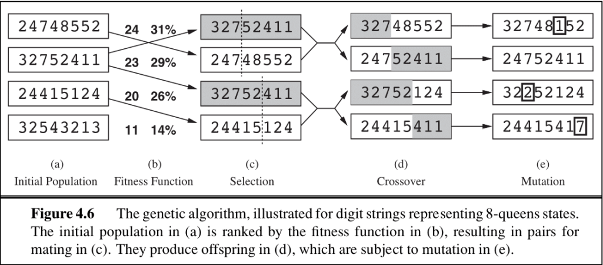
If you like this blog or find it useful for you, you are welcome to comment on it. You are also welcome to share this blog, so that more people can participate in it. If the images used in the blog infringe your copyright, please contact the author to delete them. Thank you !